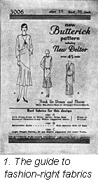

1930—Paris Frocks at Home
Lesson V—Your Pattern Your Personal Shopper
The best fabrics in guaranteed quantities.
We said in a previous chapter that your Butterick pattern envelope would assist you in your selection of fabrics and here is a picture of the envelope which eloquently proves our statement.
Here are listed according to view all the fabrics that successfully interpret the spirit of the design.
They are the best fabrics for this design and not only for this design but for three ways of developing this design: views A, B, and C.
How do we know this? We have had expert dressmakers try out this design for the kinds of fabrics listed. We can joyfully assure you that the precision of line and the smartness of this design can be produced by you in any one of these fabrics.
 How much material shall I buy?
How much material shall I buy?

We are showing you the reverse side of the envelope where you will see we have kept our promise of quantity guarantee. Your own size is listed there with important measurements including the finished length of your dress from neck to bottom of skirt at center back and the yardage for your size for each view of the dress is plainly indicated in widths of materials suggested for your dress. We have given you a choice of two ways of cutting your dress besides. You may have a bias ripple in the skirt or a straight one as you prefer.
Experts work out fabric quantities.
These fabric quantities are carefully worked out by experts with the individual pieces of each pattern. That is why we can guarantee them.